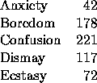
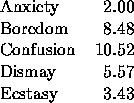
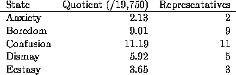
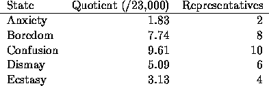

| Constitutional Computing |
Representatives and direct Taxes shall be apportioned among the several States which may be included in this Union, according to their respective Numbers... The Number of Representatives shall not exceed one for every thirty thousand, but each State shall have at least one representative.Article I, Section 2 of the U.S. Constitution
When the writers of the U.S. Constitution wrote those words in Philadelphia in 1787, they could not have foreseen the trouble they would cause mathematicians. There are numerous different interpretations of how to ``apportion according to respective Number". For more than 100 years there was debate as to how to do this apportionment, because different apportionment methods tend to favor different states. Fortunately, we have computers and can easily compare some of the more popular apportionment methods. Your program should compute the number of representatives each state will get from the methods and tell which if any of the apportionments will give the state more representatives.
Suppose there were five states in the union: Anxiety, Boredom, Confusion, Dismay, and Ecstasy, with the following populations (given in thousands):

The total population of this country then is 630 thousand. For a house of 30 representatives, each representative should represent 21 thousand people (notice we have relaxed the constitutional requirement of at most one representative for each 30,000), so the true apportionment of representatives would be:

Unfortunately, it is impossible to send half of a representative to Congress, so there needs to be away of dividing the 30 seats, giving just a positive integral number of representatives to each state. (All states must have at least one representative.)
There are four major apportionment methods: the Hamilton Method, the Jefferson Method, the Adams method, and the Webster method. The Hamilton method starts with the true apportionment and gives each state the whole number corresponding to the true value, so Anxiety will get 2 representatives, Boredom will get 8, etc. States with less than one representative will get one representative. Then, if there are any representatives left over, they will go to the states in the order of the fractional part (states with true apportionment less than one are not considered), where the state with the largest fractional part (in this case, Dismay with a fractional part of 0.57) will get the first of the extra representatives, and the second of the extra representatives will go to the state with the second largest fraction (Confusion, with a fractional part of 0.52), etc.
The other three methods will not necessarily use the divisor given by dividing the total population by the number of seats. Instead, they use different divisors to give the desired number of representatives, making sure each state has at least one representative. The Jefferson Method will find a divisor so the sum of the truncated quotients gives the desired number of representatives. 19,750 is a possible divisor for the example using the Jefferson method. Dividing by 19,750 gives the following quotients and truncating the quotients gives the number of representatives.

The Adams Method also looks for a divisor to come up with the desired number of representatives, but will round up instead of truncate. One possible divisor for the Adams Method with this example would be 23,000. Dividing by 23,000 gives the following quotients and rounding up gives the number of representatives.

Finally, the Webster Method finds a divisor so when the quotient is rounded (using standard rounding rules, where fractional parts of 0.5 or greater round up and fractional parts of less than 0.5 round down), the sum of the quotients is the desired number of representatives. In this case, a divisor of 21,000 could be used for the Webster method, giving the same number of representatives as the Hamilton method, but this is not always the case.
The input for this program will be zero or more data sets. The first line of each data set will be the number of states in the set. There will be at most 50 states in the data. There will then be one line for each state, giving the state name (a string of exactly 5 characters starting in column1), at least one blank, and the population (a positive integer). After the information about the states will be one or more integers, one per line, representing the number of representatives. You may assume this will always be greater than or equal to the number of states, so each state is guaranteed to have at least one representative. The end of the number of representatives is indicated by 0 as a number of representatives.
The end of input is indicated by a data set with 0 states. This input set should not be processed.
Before each set of data, give the number of the data set. For each number of representatives, echo the number of representatives and for each state, tell if there is an apportionment method that gives the state more representatives than the other methods. You may assume the algorithms will work for the input data as described above. Use the format of the Sample Output below. Leave a blank line after each number of representatives.
5 Anxit 42 Bored 178 Confu 221 Dismy 117 Ecsta 72 30 5 0 0
Data set 1: For 30 representatives: Anxit is favored by no method. Bored is favored by Jefferson. Confu is favored by Hamilton and Jefferson and Webster. Dismy is favored by Hamilton and Adams and Webster. Ecsta is favored by Adams. For 5 representatives: Anxit is favored by no method. Bored is favored by no method. Confu is favored by no method. Dismy is favored by no method. Ecsta is favored by no method.